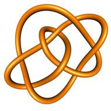

Knopentheorie 2024-2025
Nota's
.
Aanvullende nota's: de double van een eindige groep
.
Aanvullende nota's: irreduciebele representaties van U_q(sl_2)
.
Aanvullended nota's: gewichten uit Lie algebra's
.
Formularium
.
Mijn verontschuldigingen voor de overbodige "x"en in de skeinrelaties. Ik zal dit nog aanpassen.
Leerstof
.
